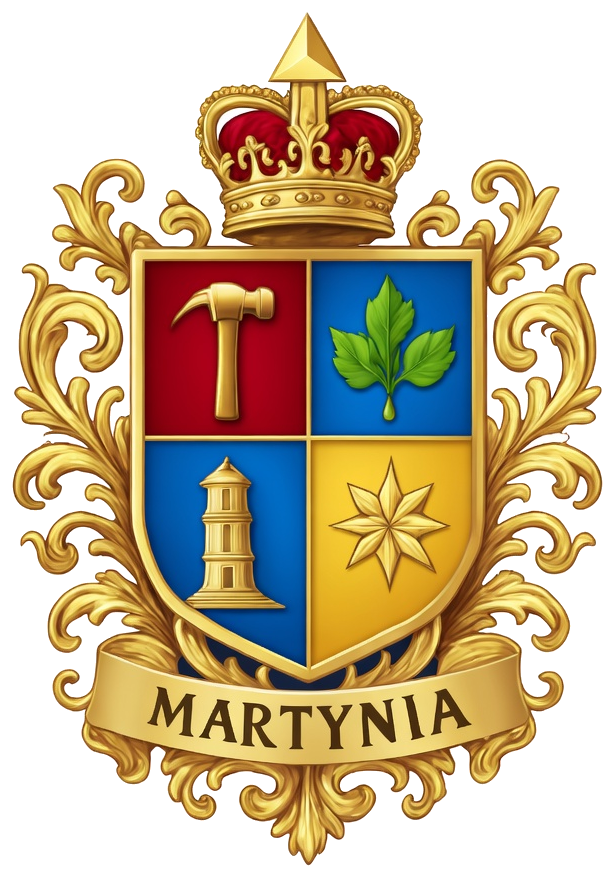

Reino
Reino A Monarquia
A Casa Real de Martynia, a estrutura dinástica do Reino e as funções do Chefe de Estado.

Brasão da Casa Real de Martynia
A monarquia do Reino Martyniano tem como núcleo institucional a Casa Real de Martynia, fundada em fevereiro de 2025 por Sua Majestade Real Kauan Martynius Rex I, sucedendo diretamente a antiga Casa Real e Imperial de Warya e consolidando a continuidade dinástica iniciada ainda em 2015.
A Coroa Martyniana é hereditária e concentra a chefia perpétua do Estado. O Rei exerce autoridade plena sobre os atos legislativos, executivos e moderadores, sendo a fonte originária de toda a legitimidade institucional do Reino, conforme a Unidade do Poder de Estado sob a Coroa estabelecida pela Constituição.
A Coroa ancestral e a dinastia
A linhagem da Coroa Martyniana remonta a duas coroas ancestrais: o Matriarcado, chefiado pela Rainha Celina Regina I, e o Patriarcado, reunidos na tradição de Celina-Grado. Celina Regina I, a quem o Soberano concedeu título póstumo em 2025, foi descrita como uma mulher detentora de luz e sabedoria, que operava na chamada "linha branca". Quando faleceu, em julho de 2016, nenhum herdeiro de primeira nem de segunda linha se mostrou apto a sucedê-la; coube então a Kauan, herdeiro de terceira linha, recolher a sua herança espiritual. Foi assim que, sobre as duas coroas ancestrais, ergueu-se a terceira — a Coroa Martyniana —, que as unificou e as perpetuou.
Estrutura dinástica
A linhagem real agrega diversos ramos familiares que, por união legítima e histórica, convergiram para a formação do ramo reinante.
Ramo Reinante · Martins Alves
Casa de Martynia, tronco da linhagem real e origem da Coroa Martyniana.
Alves dos Santos
Ramo colateral principal, associado à linhagem por união legítima e histórica.
Pereira da Fonseca
Ramo colateral principal, associado à linhagem por união legítima e histórica.
Pereira Alves
Ramo colateral principal, associado à linhagem por união legítima e histórica.
Ferreira Martins
Ramo colateral principal, associado à linhagem por união legítima e histórica.
Casas associadas
Exercem funções cerimoniais e administrativas regionais ou protocolares.
Sua Majestade Real Kauan Martynius Rex I
Fundador, Monarca e Guardião da Soberania Martyniana
Desde 14 de agosto de 2015, Sua Majestade exerce ininterruptamente funções de chefia de Estado em diversas nações e projetos que culminaram na criação definitiva do Reino Martyniano.
Títulos históricos mais relevantes
Imperador de Mércoles
2015, primeira nação fundada.
Marechal-Chanceler
Da União Zenitista Di-Martins.
Imperador de Ibinaurú
Período de consolidação imperial.
Rei de Dhenön
Sucessão de projetos nacionais.
Príncipe Regente
Do Principado de Martina.
Kauan Martynius Rex I
Nome dinástico adotado a partir de 2025.
Com a dissolução formal da Ordem Imperial de Ibinaurú em 2025, Sua Majestade assumiu o nome dinástico Kauan Martynius Rex I e proclamou o Reino como Microestado Paraestatal soberano.
A purificação pela traição
A Casa Real conheceu, em 2025, a sua provação mais dura: a traição do segundo em comando, homem de confiança de longos anos. Após investigações que remontavam a 2023, descobriu-se uma conspiração de alta traição, tentativa de golpe, sabotagem das pesquisas do Estado e profanação do sagrado. Julgado pelo Supremo Conselho Javenista, foi condenado e expulso, e o seu nome foi banido dos registros do Reino. A traição, no entanto, purificou a Ordem: separou o joio do trigo e obrigou a Coroa a reerguer-se sobre bases mais sólidas — não mais sobre lealdades humanas, mas sobre a fidelidade a Javé e ao propósito revelado.
O renascimento: de Warya a Martynius
O nome Warya, criado pelo traidor, foi banido do Reino por ordem do Soberano. Em seu lugar, adotou-se o nome Martynius, derivado de Martina, e a Casa Real de Warya deu lugar à Casa Real de Martynia. Não foi uma mera mudança heráldica: foi o corte do cordão umbilical que ainda prendia o país a uma identidade manchada. Martynia é o nome que Javé consagrou para a Coroa forjada no sangue de demônios derrotados, e é hoje o selo da continuidade ininterrupta desde a Cidade Impenetrável.
Liderança nas Guerras Patrióticas
Primeira Guerra Patriótica · 2019
Vitória comemorada em 9 de dezembro, o Dia da Vitória.
Segunda Guerra Patriótica · 2022
Vitória comemorada em 25 de março, o Grande Dia da Vitória.
Sua Majestade demonstrou excepcional liderança e resolução durante estes períodos históricos, garantindo a soberania e os princípios do Reino.
Funções atuais de Sua Majestade
Rei Martyniano e Chefe de Estado
Chefia perpétua do Estado e fonte originária da legitimidade institucional.
Regente-Primaz
Da Ordem Ortodoxa Javenista Martyniana.
Fundador e Guardião Supremo
Da nação martyniana.
Líder espiritual
Da Ortodoxia Javenista no Reino.
A monarquia martyniana não é apenas cerimonial: é o eixo estruturante e unificador de todo o sistema paraestatal, garantindo a unidade, a continuidade e a identidade do Reino Martyniano sob os princípios de Sabedoria, Força e Fé.